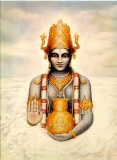

Ayurveda has an age old history since the 2nd Century BC. Ayurveda has its foundations laid by the ancient schools of Hindu Philosophical teachings named Vaisheshika and the school of logic named as Nyaya. It is also related to the manifestation framework, well-known as Samkhya, and it was established in the same period when schools of Nyaya and Vaisheshika flourished.
Ayurveda is attributed to Dhanvantari, the physician to the gods in Hindu mythology, who received it from Brahma. The origin of Ayurveda is considered to be divine, from the Hindu God, Brahma who is called as the creator of the universe.It is believed that the creator of the universe passed on this holistic knowledge of healing onto the sages for the well-being of mankind. From the sages the knowledge of traditional medicines was passed on to the disciples and then to the common man by various writings and oral narrations. The information about the healing properties of the herbs was composed in the form of poems, called Shlokas. These were used by sages to describe the use of medicinal plants. The Hindu system of healing is believed to be based on four eminent compilations of knowledge (Vedas) called as Yajur Veda, Rig Veda, Sam Veda, and Atharva Veda.
Ayurveda believes that the entire universe is composed of five elements: Vayu (Air), Jala (Water), Aakash (Space or ether), Prithvi (Earth) and Teja (Fire). These five elements are believed to form the three basic humors of human body in varying combinations. The three humors; Vata dosha, Pitta dosha and Kapha dosha are collectively called as “Tridoshas” and they control the basic physiological functions of the body along with five sub-doshas for each of the principal doshas. Ayurveda believes that the human body consists of Saptadhatus (seven tissues) Rasa (tissue fluids), Meda (fat and connective tissue), Rakta (blood), Asthi (bones), Majja (marrow), Mamsa (muscle), and Shukra (semen) and three Malas (waste products) of the body, viz. Purisha (faeces), Mutra (urine) and Sweda (sweat).
For a healthy state of health, a balance between the three doshas and other factors should be maintained. Any imbalance between the three causes a state of illness or disease.
Everyone inherits a unique mix of the three doshas. But one is usually stronger than the others. Each one controls a different body function. It’s believed that your chances of getting sick -- and the health issues you develop -- are linked to the balance of your doshas.
Vata Dosha Those who practice Ayurveda believe this is the most powerful of all three doshas. It controls very basic body functions, like how cells divide. It also controls your mind, breathing, blood flow, heart function, and ability to get rid of waste through your intestines. Things that can disrupt it include eating again too soon after a meal, fear, grief, and staying up too late. If vata dosha is your main life force, you’re thought to be more likely to develop conditions like anxiety, asthma, heart disease, skin problems, and rheumatoid arthritis.
Pitta Dosha This energy controls your digestion, metabolism (how well you break down foods), and certain hormones that are linked to your appetite. Things that can disrupt it are eating sour or spicy foods and spending too much time in the sun. If it’s your main life force, you’re thought to be more likely to develop conditions like Crohn’s disease, heart disease, high blood pressure, and infections.
Kapha Dosha This life force controls muscle growth, body strength and stability, weight, and your immune system. You can disrupt it by sleeping during the day, eating too many sweet foods, and eating or drinking things that contain too much salt or water. If it’s your main life energy, practitioners believe you may develop asthma and other breathing disorders, cancer, diabetes, nausea after eating, and obesity.